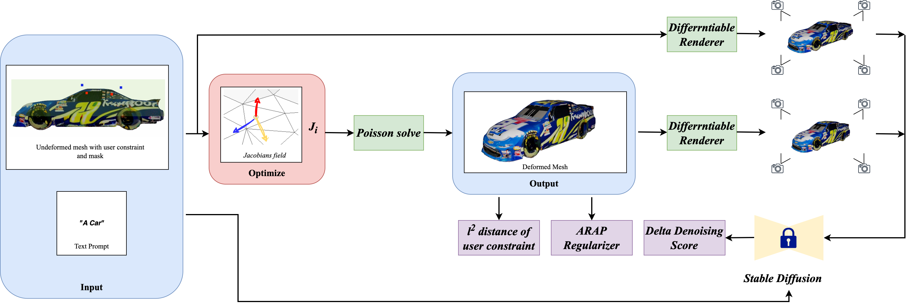

Abstract
Direct mesh editing and deformation are key components in the geometric modeling and animation pipeline. Direct mesh editing methods are typically framed as optimization problems combining user-specified vertex constraints with a regularizer that determines the position of the rest of the vertices. The choice of the regularizer is key to the realism and authenticity of the final result. Physics and geometry-based regularizers are not aware of the global context and semantics of the object, and the more recent deep learning priors are limited to a specific class of 3D object deformations. In this work, our main contribution is a local mesh editing method for global context-aware realistic deformation through direct manipulation of a few vertices. It achieves this by combining the classic geometric ARAP regularizer with image priors obtained from a large-scale diffusion model. Specifically, we render the objects from multiple viewpoints through a differentiable renderer and use the recently introduced DDS loss which scores the faithfulness of the rendered image to the diffusion model. We combine the approximate gradients of the DDS with gradients from the ARAP loss to modify the mesh vertices via neural Jacobian fields. We show that our deformations are realistic and aware of the global context of the objects, and provide better results than just using geometric regularizers.
Paper

Vertex-based Editing for Realistic Mesh Deformation Using 2D Diffusion Priors
Tianhao Xie, Eugene Belilovsky, Sudhir Mudur and Tiberiu Popa
@InProceedings{author20XXtitle,
title = {Vertex-based Editing for Realistic Mesh Deformation Using 2D Diffusion Priors},
author = {Xie, Tianhao and Belilovsky, Eugene and Mudur, Sudhir and Popa, Tiberiu},
booktitle = {Conference},
year = {2023},
}Video
Code
[GitHub]
Acknowledgements
This template was originally made by Phillip Isola and Richard Zhang for a colorful ECCV project. It was adapted to be mobile responsive by Jason Zhang for PHOSA. The code can be found here.